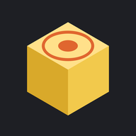

Tapscad
Política de privacidad
Última actualización: 31 de octubre de 2026
Esta política explica qué datos se tratan cuando usas Tapscad (la «app»), un visor y editor de archivos OpenSCAD para Android publicado por Isaac Ruiz (el «desarrollador»).
Resumen
La app no recoge, no envía y no comparte ningún dato. No tiene permiso de acceso a internet, ni anuncios, ni analíticas, ni cuentas de usuario.
Tus archivos
La app solo accede a la carpeta de proyecto que eliges con el selector de archivos de Android y a los archivos que abres desde otras apps («Abrir con»). Los lee y los guarda en tu dispositivo; el renderizado de los modelos 3D también se hace en el dispositivo. Puedes retirar el acceso a la carpeta en cualquier momento eligiendo otra o borrando los datos de la app.
Datos que guarda la app
Los ajustes (idioma, tema, vista) y el texto del archivo abierto, para no perder cambios si la app se cierra, se guardan solo en tu dispositivo. Si desinstalas la app o borras sus datos, esta información se elimina.
Compartir
Si eliges «Compartir STL» o «Compartir .scad», el archivo se entrega a la app que selecciones en el menú de Android (correo, Drive…). Ese envío lo decides tú y lo hace esa otra app, con su propia política de privacidad.
Permisos
La app no pide permisos. El acceso a carpetas y archivos se concede con el selector del sistema, solo para lo que eliges.
Menores
La app no recoge datos de nadie, tampoco de menores.
Cambios
Si esta política cambia, se publicará aquí con una nueva fecha de actualización.
Contacto
Privacy Policy
Last updated: October 31, 2026
This policy explains what data is processed when you use Tapscad (the "app"), an OpenSCAD file viewer and editor for Android published by Isaac Ruiz (the "developer").
Summary
The app does not collect, send or share any data. It has no internet permission, no ads, no analytics and no user accounts.
Your files
The app only accesses the project folder you choose with the Android file picker and the files you open from other apps ("Open with"). It reads and saves them on your device; 3D models are also rendered on the device. You can revoke access to the folder at any time by choosing another one or clearing the app's data.
Data stored by the app
Settings (language, theme, view) and the text of the open file, so that changes are not lost if the app closes, are stored only on your device. If you uninstall the app or clear its data, this information is deleted.
Sharing
If you choose "Share STL" or "Share .scad", the file is handed to the app you pick in the Android menu (email, Drive…). You decide that transfer, and it is carried out by that other app under its own privacy policy.
Permissions
The app requests no permissions. Access to folders and files is granted through the system picker, only for what you choose.
Children
The app collects no data from anyone, children included.
Changes
If this policy changes, it will be published here with a new update date.